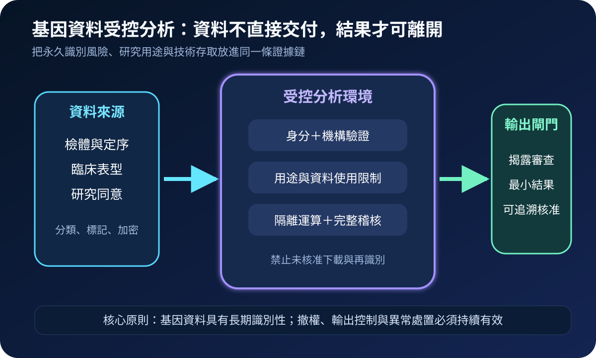
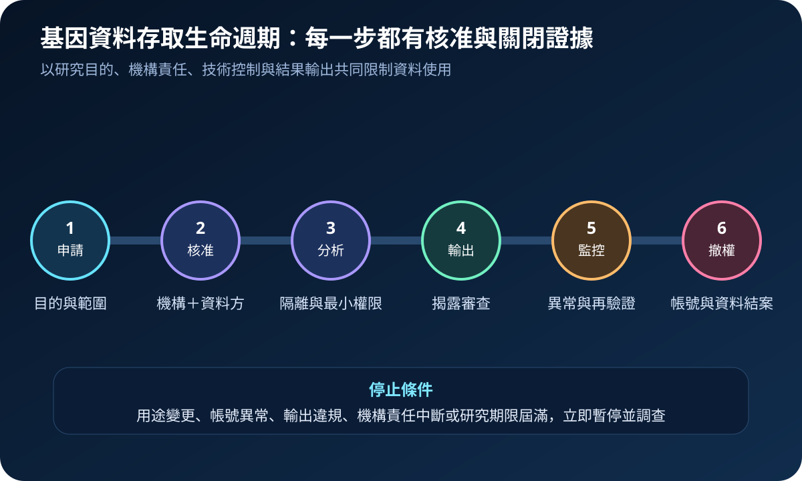
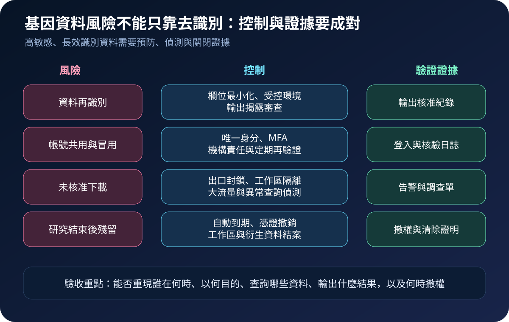

醫療資安國際觀察 · 2026-10-25
醫療基因資料如何避免永久性外洩：從受控分析到輸出審查
作者：Dr. William｜醫療資訊與資安治理實務工作者
基因資料不只包含當次診療資訊，也可能長期連結個人、家族與疾病風險。安全治理不能停在去識別或下載前簽署同意書，而要限制資料在哪裡分析、能輸出什麼、誰持續負責，以及研究結束後如何撤權。
名詞解釋：去識別、受控存取與隱私增強技術
去識別會移除直接識別欄位，但基因特徵仍可能與其他資料重新連結。受控存取要求研究目的、機構責任、使用者身分與資料使用條件經核准後才開放。隱私增強技術（PETs）包含聯邦分析、可信執行環境、安全多方計算或差分隱私等方法，用來減少原始資料移動或輸出揭露；技術仍須搭配身分、用途、稽核與事件處置。
國際現況與適用邊界
NIST NCCoE 持續推進基因資料資安與隱私專案，涵蓋生命週期風險、威脅建模、框架設定檔與隱私增強技術；2025 年 8 月發布的 SP 1800-43 初稿，示範如何對基因定序與分析環境記錄架構、辨識威脅並反覆驗證介入措施。美國 NIH 最新受控資料要求頁面指出，自 2026 年 2 月 25 日起，新簽或續約的受控存取協議須遵循指定安全標準。HHS OIG 對 All of Us 研究計畫的稽核則指出，詳細參與者資料的下載限制、跨境存取核准、基因資料國安風險溝通及缺失修正時效都需要可驗證控制；相關建議於 2026 年 4 月標示完成。這些是美國研究與聯邦治理脈絡，不是台灣醫院的直接法定要求。
台灣適用原則：台灣醫療機構可採用受控分析、雙層核准、輸出審查與可撤回存取等方法，但資料利用、研究倫理、跨境傳輸、個資保護與醫療紀錄處理，仍須依台灣法令、主管機關要求、研究倫理審查及院內規範決定。
規劃：先定義資料邊界與責任鏈
範圍宜涵蓋原始定序檔、變異結果、臨床表型、家族關聯、研究同意、衍生模型與輸出報表。資料治理角色核對目的與使用條件；研究倫理與資料權責單位確認適用範圍；資訊資安單位管理隔離環境、身分與稽核；研究主持人負責成員、查詢與輸出。驗收指標可包含具名帳號覆蓋率、MFA 啟用率、未核准出口阻擋率、輸出覆核時效、異常調查關閉率及研究結案撤權時效。
實作：六階段受控生命週期
- 申請：記錄研究目的、資料範圍、期限、方法、合作機構與預期輸出。
- 核准：分開確認機構責任、使用者身分、研究倫理與資料使用條件。
- 分析：在隔離工作區執行最小權限運算，限制複製、外接儲存與任意網路出口。
- 輸出：針對小樣本、稀有變異、家族關聯與可再識別組合進行揭露審查。
- 監控：偵測大量查詢、異常時段、帳號共用、下載嘗試與用途偏移。
- 撤權：研究到期、成員離職或機構責任中斷時，關閉帳號、憑證、工作區及衍生資料。

風險：永久識別資料需要可證明的關閉能力
常見失敗包括把去識別視為匿名、共用研究帳號、允許完整資料下載、只審查輸入不審查輸出，以及研究結束後保留工作區與衍生檔。控制重點是唯一身分、雙層核准、隔離運算、出口封鎖、查詢與輸出日誌、異常告警、定期再驗證及自動到期。每項控制都應留下可重現的證據，而非只有政策文件。

可執行清單
- 基因資料與衍生結果是否已依識別風險、用途及保存期分類？
- 每位研究者是否使用唯一身分、MFA 與具期限的最小權限？
- 原始資料是否優先留在受控環境，避免完整下載到個人端點？
- 輸出是否檢查稀有變異、小樣本、家族關聯與可再識別組合？
- 異常查詢、出口嘗試與用途偏移是否有門檻、告警及調查責任？
- 研究結束後是否可證明帳號、憑證、工作區與衍生資料已結案？
來源
- NIST NCCoE｜Cybersecurity and Privacy of Genomic Data（專案狀態：Reviewing Comments；查閱：2026-10-25）
- NIST｜SP 1800-43 Genomic Data Threat Modeling（發布：2025-08-05；查閱：2026-10-25）
- NIH｜Requirements for NIH Controlled-Access Data Repositories and Users（頁面更新：2026-09；查閱：2026-10-25）
- HHS OIG｜The National Institutes of Health Needs to Improve the Cybersecurity of the All of Us Research Program to Protect Participant Data（報告：2025；建議完成：2026-04；查閱：2026-10-25）
內容說明
本文依健康台灣深耕計畫相關治理內容整理，並參考 NIST、NIH 與 HHS OIG 公開資料，提出基因資料分類、受控分析、輸出審查、持續監控與撤權結案方法；不把美國研究制度視為台灣法定義務，也不取代主管機關公告、研究倫理審查、院內資料治理或法律意見。